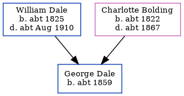

George Dale c1859 -
[ Home ] | [ Calendar ] | [ Surnames Index ] | [ Errors ] | [ Family History ]The child of William Dale (an agricultural labourer) and Charlotte Bolding, George Dale, the first cousin four-times-removed on the father's side of Nigel Horne, was born in Chartham, Kent, England c. 18591. On 7 Apr 1861, he was living at Heath Farm Cottages, Canterbury, Kent, England1.
Parents
- William was born c. 1825
- Charlotte was born c. 1822
Citations
- 1861 England, Wales & Scotland Census - Findmypast (was age 2 and the son of the head of the household)
Media
1871 England, Wales & Scotland Census - GBC/1871/0014163788
Family Tree
Map
Generated by ged2site. Last updated on Jul 3, 2024